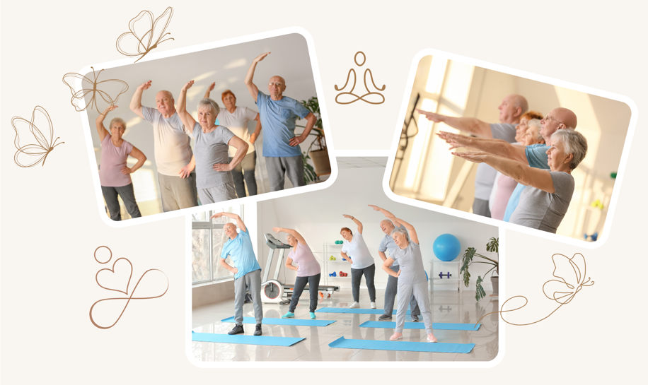

- Offrez à vos résidents une pause bien-être avec la sophrologie en EHPAD !
- La sophrologie soulage stress, douleurs et solitude chez les seniors.
- Respiration, relaxation et visualisation : des clés pour retrouver le sourire.
- Les séances créent des sensations positives et améliorent la qualité de vie.
- Un voyage intérieur pour puiser du réconfort dans les souvenirs heureux.
